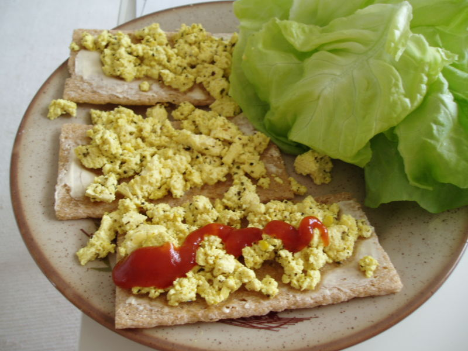

Tofu Scramble

Description
Another delicious way to enjoy tofu. This dish may look like your traditional
scrambled eggs but it brings its own flavour profile that cannot be beat. May be enjoyed by itself
but can be paired with veggies or your carb of choice to make this a filling and protein-filled meal.
Ingredients
- Tofu
- Olive oil (or any other oil of your choice)
- Garlic pepper
- Turmeric
- Salt
Steps
- Heat up pan
- Lighly drizzle olive oil and gently place two block of tofu.
- Begin to mash up tofu blocks
- Add salt, garlic pepper and turmeric to acheive a yellow colour
- Allow to cook
- Once water in pan has evaportated turn off the stove and allow to cool down
- Serve with your choice of veggies, bread or crackers
Home